통신선로기능사 (2008-10-05 기출문제)
1과목: 전기전자개론
1. 평판 콘덴서에 2[C]의 전기량을 줄 때 두 판 사이의 전위가 10[V]이면 이 콘덴서의 정전용량은 몇 [F]인가?
- 0.1[F]
- 0.2[F]
- 0.5[F]
- 1.5[F]
(정답률: 55%)

2. 트랜지스터의 컬렉터 역포화 전류 Ico가 주위온도의 변화로 2[㎂]에서 102[㎂]로 증가 되었을 때 컬렉터 전류 Ic의 변화가 0.5[㎃]였다면 이 회로의 안정도 계수는 얼마인가?
- 1.2
- 3.6
- 5
- 6.3
(정답률: 41%)
3. 주파수 변조회로에서 신호(변조) 주파수가 1[㎑], 최대주파수 편이가 6[㎑]일 때 변조지수는 얼마인가?
- 0.16
- 6
- 8
- 16
(정답률: 73%)
4. 다음 가산기(adder) 회로에서 출력 Vo는 몇 [V] 인가?
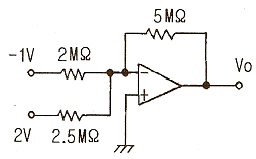
- 1[V]
- -1[V]
- 1.5[V]
- -1.5[V]
(정답률: 42%)
5. 10[Ω]의 저항에 1[A]의 전류를 1초 동안 흘렸을 때 발열량은 몇 [㎈]인가?
- 1[㎈]
- 1.2 [㎈]
- 2.4 [㎈]
- 10 [㎈]
(정답률: 31%)
6. 다음 중 핀치 오프 전압을 가장 잘 설명한 것은?
- 게이트 전류가 0 일때의 드레인 – 소스 간의 전압
- 드레인 전류가 0 일때의 게이트 – 드레인 간의 전압
- 드레인 전류가 0 일때의 게이트 – 소스 간의 전압
- 드레인 전류가 0 일때의 드레인 - 소스 간의 전압
(정답률: 57%)
7. LC 발진 등 동조 발진회로에서 주로 사용되는 증폭기의 동작 방식은?
- A급
- AB급
- B급
- C급
(정답률: 49%)
8. 증폭기의 전압 증폭도가 1000 일 때 이것을 [dB]로 나타내면 몇 [dB]인가?
- 20[dB]
- 30[dB]
- 40[dB]
- 60[dB]
(정답률: 39%)
9. 어떤 펄스 회로에서 상승시간은 펄스 높이의 몇 [%]에서 몇 [%] 까지 상승하는데 걸리는 시간인가?
- 0%에서 90까지
- 10%에서 90%까지
- 10%에서 100%까지
- 0%에서 100%까지
(정답률: 74%)
10. 저항 4Ω과 6Ω을 병렬로 접속하고 여기에 2.6Ω의 저항을 직렬로 접속하였을 때 합성저항은 몇 [Ω] 인가?
- 10[Ω]
- 5[Ω]
- 2.5[Ω]
- 1[Ω]
(정답률: 42%)
11. 이상적인 연산증폭기에서 동상 신호 제거비(CMRR)는 얼마인가?
- 0
- 1
- 1000
- 무한대
(정답률: 71%)
12. 다음 중 FET에 대한 설명으로 적합하지 않은 것은?
- BJT 보다 이득대역폭 적이 작다.
- BJT 보다 잡음특성이 우수하다.
- BJT는 3층 구조이나 FET는 4층 구조이다.
- 높은 신뢰도를 얻을 수 있다.
(정답률: 57%)
13. 무궤환시 전압이득이 150 인 증폭기에서 궤환율 β = 0.01의 부궤환을 걸었을 때 전압이득은?
- 9
- 30
- 60
- 150
(정답률: 48%)
14. 다음중 직접회로(IC)의 특징에 대한 설명으로 가장 적합하지 않은 것은?
- 경제적이다.
- 소형이며 성능이 우수하다.
- 고전력용으로 많이 사용된다.
- 높은 신뢰도를 얻을 수 있다.
(정답률: 73%)
15. 다음 중 입력 파형의 기준을 다른 기준 레벨로 바꾸어 고정시키는 회로는?
- 펄스 회로
- 클램핑 회로
- 클리퍼 회로
- 리미트 회로
(정답률: 51%)
2과목: 전자계산기일반
16. 다음중 프로그램 작성 단계에서 어떠한 데이터를 어떻게 입력하여, 처리결과를 어떻게 출력할 것인지를 결정하는 단계는?
- 순서도 작성 단계
- 문제 분석 단계
- 프로그램 번역 단계
- 입·출력 설계 단계
(정답률: 78%)
17. 두 입력 A,B가 모두 1 일 때만 출력 Y가 1 이 되는 논리회로는?
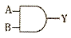
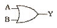
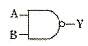
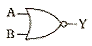
(정답률: 68%)
18. 16비트를 1워드로 사용하는 컴퓨터에서 OP-코드를 6비트로 하면 최대 몇 가지 명령어를 수행할 수 있는가?
- 16
- 64
- 128
- 256
(정답률: 58%)
19. 다음 중 USB에 대한 설명으로 옳지 않는 것은?
- 병렬 포트의 원리와 동일하다.
- 플러그 앤 플레이 방식을 지원한다.
- 하나의 주 컨트롤러에는 최대 127eo의 주변장치를 연결 할 수 있다.
- 컴퓨터와 주변기기를 연결하는데 쓰이는 입·출력 표준의 하나이다.
(정답률: 46%)
20. CPU에서 메모리나 입·출력 장치의 번지를 지정해 주는 것은?
- 제어 버스
- 데이터 버스
- 어드레스 버스
- 명령 레지스터
(정답률: 54%)
21. 드모르간의 정리에서
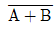
와 같은 논리식은?- AㆍB
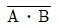
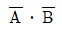
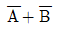
(정답률: 63%)
22. 다음 bit에 관한 설명 중 틀린 것은?
- 10진수의 한 자리수를 말한다.
- 2진수를 나타내는 둘 중의 하나이다.
- 정보량을 표현하는 것 중 최소단위이다.
- Binary digit의 약자이다.
(정답률: 55%)
23. 컴퓨터의 특징과 그에 대한 설명으로 옳지 않은 것은?
- 자동처리 : 프로그램 내장 방식에 의한 순서적 처리가 가능하다.
- 대용량성 : 대량의 자료를 저장하며 저장된 내용의 즉시 재생이 가능하다.
- 신속,정확성 : 처리에 소요되는 시간이 다른 기계와 비교할 수 없을 정도로 신속, 정확하다.
- 동시 사용, 호환성 : 다른 장비와 결합하여 사용할 수 있다.
(정답률: 34%)
24. 보조기억장치가 데이터에 접근하는 방식 중 자기테이프 장치에서와 같이 필요한 데이터를 판독 또는 기록할 때 파일의 처음에서부터 순차적으로 접근하는 방식은?
- DAM
- SAM
- CAM
- 일괄처리
(정답률: 39%)
25. 다음 중 ROM에 대한 설명으로 옳지 않은 것은?
- 일반적으로 윈도 프로그램을 저장한다.
- MASK ROM은 저장된 내용을 지울 수 없다.
- 전원이 끊어져도 저장된 내용은 지워지지 않는다.
- UVEPROM은 자외선을 이용해 저장된 내용을 지울 수 있다.
(정답률: 26%)
26. 다음 중 누화의 경감법에 속하지 않는 것은?
- 교차
- 시험 접속
- 정전 결합
- 반점 및 사치
(정답률: 38%)
27. 광케이블에서 클래드의 최대직경이 127[㎛], 최소직경이 123[㎛], 표준직경이 125[㎛]일 때 비원율은?
- 1.6[%]
- 2.0[%]
- 3.2 [%]
- 4.0[%]
(정답률: 53%)
28. 다음 중 통신선로의 전파정수 r를 나타낸 것은?
- R-jωL
- G+jωL
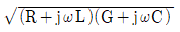
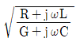
(정답률: 70%)
29. 전주에서 지선과 지주의 추부 방법 중 가장 적합한 것은?
- 지선은 장력측, 지주는 장력의 반대측에 취부한다.
- 지선과 지주 모두 장력의 반대측에 취부한다.
- 지선은 장력의 반대측, 지주는 장력측에 취부한다.
- 지선과 지주 모두 장력측에 취부한다.
(정답률: 40%)
30. 광섬유 케이블의 손실에 해당되지 않는 것은?
- 흡수 손실
- 열손실
- 접속 손실
- 굽힘 손실
(정답률: 59%)
3과목: 통신선로일반
31. 다음 중 인공(man hole) 축조시 유의해야 할 사항과 가장 거리가 먼 것은?
- 케이블 분기방향
- 관로의 취부위치
- 관로의 취부각도
- 케이블의 배열순서
(정답률: 61%)
32. 다음 중 케이블(Cable)을 절연 접속하는 가장 주된 목적은?
- 낙뢰로 인한 피해를 방지하기 위하여
- 납땜을 절약하기 위하여
- 누설 전류를 차단하기 위하여
- 화학적인 부패를 방지하기 위하여
(정답률: 77%)
33. 600[Ω]의 전송선로에서 0[dBm]에 관한 설명으로 거리가 먼 것은?
- 전송로의 부하에 1[㎽]의 전력을 공급한다.
- 전송로에 약 1.29[㎃]의 전력을 공급한다.
- 전원의 전압은 10[V]이다.
- 전송로의 부하에 약 0.775[V]의 전압강하가 일어난다.
(정답률: 50%)
34. 광섬유 케이블의 코어 내에서 전반사를 지속하기 위한 굴절률 관계는? (단, n1: 코어의 굴절률, n2: 클래드의 굴절률)
- n1 = n2
- n1＜ n2
- n1＞ n2
- n1 = 2n2
(정답률: 57%)
35. 코어의 굴절률 1.6 이고 클래드의 굴절률이 1.4 인 광섬유 케이블에서 심선의 개구수(NA)는 약 얼마인가?
- 0.33
- 0.59
- 0.77
- 0.94
(정답률: 59%)
36. 다음 중 멀티미디어 서비스의 수용을 위하여 16[㎒]정도 이상의 전송대역을 갖는 구내케이블로 가장 적합한 것은?
- FS 케이블
- PVC 케이블
- CCP 케이블
- UTP 케이블
(정답률: 68%)
37. 600Ω과 400Ω의 특성 임피던스를 가지는 선로를 접속시키면 전압 반사계수는?
- 0.2
- 0.3
- 0.4
- 0.5
(정답률: 51%)
38. 다음 중 전송선로에서 전파시간이 가장 많이 소요되는 것은?
- 장하 케이블
- 무장하 케이블
- 동축 케이블
- 광케이블
(정답률: 57%)
39. 다음 중 누화의 종류가 아닌 것은?
- 근단누화
- 원단누화
- 자기누화
- 간접누화
(정답률: 45%)
40. 심선을 꼬아놓은 방법 중 쌍(pair)에 대한 설명으로 옳은 것은?
- 2개의 심선을 꼬아 놓은 것
- 4개의 심선을 꼬아 놓은 것
- 6개의 심선을 꼬아 놓은 것
- 8개의 심선을 꼬아 놓은 것
(정답률: 76%)
41. 건물내에 전화용 수평 덕트를 설치할 경우 그 교차점에는 무엇을 설치하는가?
- 단자함
- 연결함
- 핸드홀
- 맨홀
(정답률: 59%)
42. 케이블 심선의 절연재료 중 절연특성이 가장 좋은 것은?
- 지(종이)
- PE
- PEF
- PVC
(정답률: 49%)
43. 다음 중 전류가 도체표면에 집중되는 성질로 사용 주파수가 증가하면 전송손실이 커지는 것은?
- 표피작용
- 발열작용
- 와류손실
- 흡인작용
(정답률: 30%)
44. 레이저 다이오드(LD)의 빛이 발광다이오드(LED)에서 방출되는 빛과 비교하였을 때 특징이 아닌 것은?
- 직진성이 높다.
- 단색성이 높다.
- 빛의 출력이 크다.
- 빛의 스펙트럼 폭이 넓다.
(정답률: 71%)
45. 시내선로 또는 시외선로에 사용하여도 누화가 발생되지 않는 케이블은?
- 장하 케이블
- 스크린 케이블
- CCP 케이블
- 광섬유 케이블
(정답률: 62%)
4과목: 선로설비기준
46. 방송통신위원회는 천재·전시·사변 등 전기통신사업자에게 전기통신업무의 전부 또는 일부를 제한하거나 정지할 수 있다. 이의 목적으로 가장 적합한 것은?
- 전기통신사업의 건전한 발전을 위해
- 중요 통신의 확보를 위해
- 국가통신 비밀보호를 위해
- 전기통신설비의 건설과 보전을 위해
(정답률: 58%)
47. 전기통신 기본법의 궁극적인 목적은?
- 전기통신 서비스의 제공 확대
- 공공복리의 증진
- 전기통신설비의 건설과 보전
- 전기 통신 세입의 증대
(정답률: 50%)
48. 전기통신 설비의 설치를 위해 다른 사람의 토지에 출입을 함으로서 발생한 피해 보상으로 옳은 것은?
- 세금감면
- 손해배상
- 손실보상
- 실물보상
(정답률: 67%)
49. 전기통신기본법에 의한 “유선·무선·광선 및 기타의 전자적 방식에 의하여 모든 종류의 부호·문언·음향 또는 영상을 송신하거나 수신하는 것”에 대한 용어는?
- 정보전송
- 데이터통신
- 통신역무
- 전기통신
(정답률: 52%)
50. 전기통신 회선설비를 설치하고 이를 이용하여 공공의 이익과 국가산업에 미치는 영향, 역무의 안정적 제공의 필요성 등을 참작하여 전신·전화 역무 등 대통령이 정하는 종류와 내용의 전기통신역무를 제공하는 사업은?
- 공중통신사업
- 자가통신사업
- 기간통신사업
- 부가통신사업
(정답률: 40%)
51. 정보통신공사업자 외의 자가 시공 할 수 있는 경미한 공사의 범위가 아닌 것은?
- 무선국의 무선설비 설치공사
- 연면적 1000[m2] 이하의 구내 방송설비 설비공사
- 건축물에 설치되는 5회선 이하의 구내통신선로 설비공사
- 아마추어국 및 실험국의 무선설비 설치공사
(정답률: 36%)
52. 전기통신설비의 건설과 보전을 위한 토지 등의 일시사용 기간은 몇 월을 초과 할 수 없는가?
- 1월
- 3월
- 6월
- 12월
(정답률: 67%)
53. 정보통신공사업의 등록 기준에 속하지 않는 것은?
- 기술능력
- 자본금
- 공사용 기기
- 사무실
(정답률: 43%)
54. 구내통신선로설비에 사용되는 급전선 인입 접속함의 절연 저항은?
- 10[㏁]이상
- 50[㏁]이상
- 100[㏁]이상
- 500[㏁]이상
(정답률: 9%)
55. 다음 중 전기통신기본계획의 수립에 관한 사항이 아닌 것은?
- 전기통신의 이용 효율화에 관한 사항
- 전기통신의 질서유지에 관한 사항
- 전기통신사업의 경영에 관한 사항
- 전기통신설비에 관한 사항
(정답률: 68%)
56. 전화급 평형회선은 회선 상호간 전기통신 신호의 내용이 혼입되지 아니하도록 두 회선 사이의 누화 감쇠량은 몇 데시벨 이상이어야 하는가?
- 50데시벨
- 55데시벨
- 68데시벨
- 108데시벨
(정답률: 54%)
57. 기간통신사업을 경영하고자 하는 자는 방송통신위원회의 어떤 절차를 거쳐야 하는가?
- 승인
- 인가
- 등록
- 허가
(정답률: 62%)
58. 전송설비는 전력유도로 인한 피해가 없도록 건설되어야 한다. 기기 오동작 유도종전압이 몇 [V] 이상 초과시 전력유도방지 조치를 취하여야 하는가?
- 100
- 60
- 30
- 15
(정답률: 29%)
59. 식물이 선로 등의 설치·유지 및 공중통신에 장애를 주거나 줄 우려가 있을 때 기간 통신 사업자의 우선 조치 사항으로 옳은 것은?
- 식물을 벌채 또는 이식한다.
- 소유자 또는 점유자에게 식물의 제거를 요구할 수 있다.
- 일정기간 공고한 후 제거한다.
- 산림청장의 허가를 받아야 한다.
(정답률: 67%)
60. 다음 중 정보통신 공사의 종류가 아닌 것은?
- 정보설비공사
- 측정설비공사
- 통신설비공사
- 방송설비공사
(정답률: 70%)